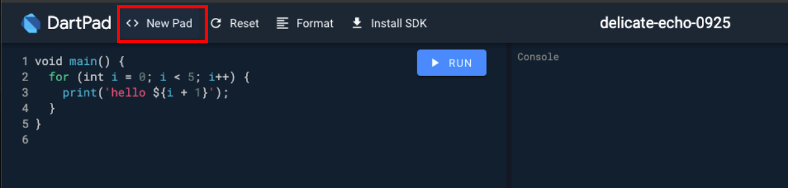

What You'll Build in this Workshop:
- A well-architected full-stack Flutter Application for a fictitious banking institution (Flutter Savings Bank), consisting of the following screens:
- Splash Page
- Login Page
- Registration Page
- Landing Page
- Withdrawal Page
- Deposit Page
- Expenses Page
We will add the following features by implementing a serverless backend powered by Firebase:
- Firebase Authentication
- Creation of new accounts
- Pull data from Firebase Cloud Firestore
- Implement real-time updates
- Add / Update / Delete functionality
You will also learn about the following:
- Create Flutter User interfaces with ease
- Common Flutter Layout strategies using just core widgets
- Creating custom Flutter widgets and achieve widget composition
- Using Material Icon fonts
- State Management using Provider to decouple Business Logic of Components (BLoC)
- A computer with a browser
- An internet connection
For the Coding Roulette Session:
- We'll be using LiveShare, a web-based VS Code plugin for real-time collaborative development.
DartPad will be our Flutter development editor, so let's set it up for that.
First, go to a browser and launch dartpad.dev. Your browser should look as follows:

Setting up DartPad for Flutter Development
By default, DartPad is set up for Dart development. For Flutter development, do the following steps:
- From the top menu, select New Pad.

- If prompted to discard changes of the current pad, click OK.

- From the New Pad dialog, select Flutter. Click Create.

You should be all set! Now you're ready to start coding in Flutter right from your browser. If you hit the Run button, you will see the generated output on the right panel.

Are you ready? Let's go to the next step!
For the initial page in this application, we'll be building the Splash Screen.
This is what we'll be accomplishing in this codelab:
Splash Screen and its widget composition
The following illustration shows a schematic view of the widget composition we'll accomplish while building the layout for our splash screen widget:
Start Coding the App
Let's start coding this application from scratch. Remove all code from the editor and leave just the following code:
import 'package:flutter/material.dart';
void main() {
// TODO: more code here later
}
We are importing the Material Library Flutter package and like every Flutter app, the main entrypoint is the main method. Inside this method is where things kick off. We'll get back to this point in a minute.
Inside the main method, add the following code:
// add this code inside your void main():
runApp(FlutterBankApp());
The runApp method is part of the Flutter framework and is in charge of mounting the root widget on the widget tree. We create the first widget (FlutterBankApp) which represents the application's root widget, and this widget will wrap the MaterialApp widget.
Let's flesh out our root FlutterBankApp widget by creating a custom StatelessWidget class that overrides its build method and returns an instance of MaterialApp:
Inside of the MaterialApp widget, let's disable the debugging sash by setting the debugShowCheckedModeBanner to false, and set the home property of the MaterialApp widget to be our SplashPage widget, which we'll create in a moment.
Using Google Fonts
In DartPad, you can use Google Fonts (both for text and icons); to customize the text font, import the Google Fonts package at the top of the file, and override the theme property of the MaterialApp widget, so it overrides the font used globally on all text-based widgets, as such (we'll use the Poppins font):
Let's create the splash Widget.
Right under the FlutterBankApp widget, create a StatelessWidget called FlutterBankSplash. We create it as Stateless since we won't be maintaing state at the moment. More info on StatelessWidgets here.
Since every widget has a build method, add one, and return a Scaffold widget. We are using a Scaffold widget since it's a kind of widget that implements the basic material design visual layout structure and it is a convenient way to start as the foundation of a full-blown page as it allows to add other core components to it (i.e. AppBar, Drawer, BottomBar, etc.).
Set its backgroundColor property to a color that later we'll use it as our main theme color:
The output of that would look like this:
Before We Proceed Further...
Let's move that hardcoded color to a more convenient place so we can use it everywhere in a more systematic way. Create a class called Utils, and save the color we just added to the Scaffold to a property called mainThemeColor; give it static const as its modifiers:
class Utils {
static const Color mainThemeColor = Color(0xFF8700C3);
}
Ok - Back to the FlutterBankSplash widget. Replace the hard-coded color as the backgroundColor property of the Scaffold and use the predefined Utils.mainThemeColor instead:
No difference should be noticed. It's mostly the convenience. Let's proceed by adding the remaining elements to this splash screen.
We want an Icon widget and a CircularProgressIndicator, so we'll use a Stack widget as the foundation of this structure. Add a Stack as the body of the Scaffold:
As the first child of the stack an Icon widget (Icons.savings) and center it in the middle of the Stack using a Center widget:
Add the CircularProgressIndicator right on top of the Icon widget, also centered, and wrap it inside a fixed SizedBox (100px by 100px) to constrain its dimensions:
Add the const keyword in from of the Stack children array (just a trick to keep it from barking during execution).
Reload on DartPad and check out how's looking:
Before adding the splash screen simulation, we want to create a dummy landing page, to which our splash screen should navigate after the delay.
We'll create a widget page called FlutterBankLogin which will represent the login page of this application. For now we'll create it as a placeholder for the splash screen to redirect to, but we'll further define it on later codelabs.
Create a StatefulWidget widget class called FlutterBankLogin, and as every custom StatefulWidget widget, you must create the two classes that compose it: the StatefulWidget and the State class. Override the build method that just returns a simple Scaffold with a Text widget wrapped inside a Center widget as its body; add the text "Login Page" to the Text widget, as follows:
With that in place, let's proceed with the next step, which is introducing a delay on the splash page which then will trigger a navigation action to this sample page. Let's go!
Let's proceed now to add the behavior of a splash screen by introducing a small delay, which will lead to the app navigating to the next page.
So what we'll do now is simulate a delay in the splash page, then navigate to our main page. For that we'll make use of a Future, which is an object that represents a delayed computation. More on Futures here.
Back in our FlutterBankSplash widget, let's add a Future, and use one of the provided methods called delayed. This method takes a duration, and a callback, which gets executed once the duration (or delay) has ellapsed. We'll set a duration of 2 seconds, and when this time has ellapsed, it will execute our callback, which in turn will perform a Navigation to our list page.
Add a Future.delayed inside the splash page widget's build method, right above the return statement, as such:
Let's dissect this code. Future.delayed takes two parameters: a Duration object with is seconds property set to 2, and a callback. When the 2 seconds have ellapsed, it will call the callback.
The callback has inside a trigger to perform a navigation. We use Navigator.of to push a new route to the global navigation stack, using the BuildContext context to retrieve the closest navigator in the hierarchy, in our case, the one available by default from the MaterialApp. We use a MaterialPageRoute to wrap the widget we want to navigate to, in our case the DonutShopMain widget page created earlier.
Now, let's take our current implementation for a spin with what we have so far.
In DartPad, click Run. After a 2 seconds delay, you should see the FlutterBankSplash widget slide out of view and sliding in comes the FlutterBankLogin widget, which will be our landing page for now.
Congrats in making it this far! In this codelab, we accomplished the following:
- Performed the initial setup of our DartPad environment
- Created our initial boilerplate startup code
- Created a Splash Page widget with core widgets
- Created a dummy landing page (FlutterBankLogin) for the splash page widget to navigate to
- Introduced Futures to add a small delay before proceeding further
- Tapped into the navigation capabilities of Flutter
In the next codelab, we'll flesh out the FlutterBankLogin widget and learn more about creating custom widgets. See you there!
Please don't forget to follow me on social media:
- On Twitter (@drcoderz)
- On YouTube (Roman Just Codes)
- On My Personal Portfolio
- On Medium
- On LinkedIn
In case you fell behind on this codelab, below is the whole code for this codelab in a way you can copy / paste directly into DartPad:
import 'package:flutter/material.dart';
import 'package:google_fonts/google_fonts.dart';
void main() {
runApp(FlutterBankApp());
}
class FlutterBankApp extends StatelessWidget {
@override
Widget build(BuildContext context) {
return MaterialApp(
theme: ThemeData(
textTheme: GoogleFonts.poppinsTextTheme(
Theme.of(context).textTheme
)
),
debugShowCheckedModeBanner: false,
home: FlutterBankSplash()
);
}
}
class FlutterBankSplash extends StatelessWidget {
@override
Widget build(BuildContext context) {
Future.delayed(const Duration(seconds: 2), () {
Navigator.of(context).push(
MaterialPageRoute(builder: (context) => FlutterBankLogin())
);
});
return Scaffold(
backgroundColor: Utils.mainThemeColor,
body: Stack(
children: const [
Center(
child: Icon(Icons.savings, color: Colors.white, size: 60)
),
Center(
child: SizedBox(
width: 100,
height: 100,
child: CircularProgressIndicator(
strokeWidth: 8,
valueColor: AlwaysStoppedAnimation<Color>(Colors.white)
)
)
)
],
)
);
}
}
class FlutterBankLogin extends StatefulWidget {
@override
FlutterBankLoginState createState() => FlutterBankLoginState();
}
class FlutterBankLoginState extends State<FlutterBankLogin>{
@override
Widget build(BuildContext context) {
return Scaffold(
body: Center(
child: Text('Login Page')
)
);
}
}
class Utils {
static const Color mainThemeColor = Color(0xFF8700C3);
}